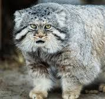
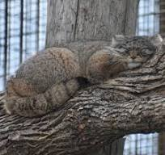
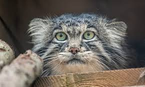
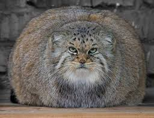
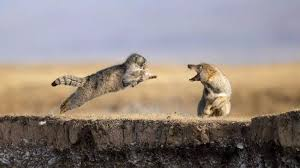
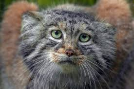
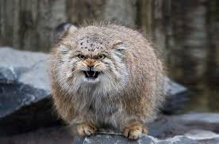
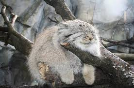
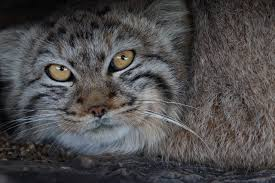

-
Это самая нелюдимая порода кошек. Их невозможно приручить. Как только манулы видят людей, они начинают шипеть и искать возможность скорее сбежать от человека.
 -
Очень часто манулов можно встретить в норах барсуков, в расщелинах камней. Но иногда они выбирают для жизни совершенно непредсказуемые места. Как и домашние кошки, манулы могут селиться там, где только душе угодно. Так, сотрудники Даурского заповедника в Забайкалье как-то нашли двух самок манулов, поселившихся в старых заброшенных комбайнах. Чем они руководствуются — неизвестно.
 -
Зрачки манула никогда не приобретают щелевидную форму, как это бывает у домашних кошек, а всегда остаются круглыми.
 -
Хотя манулы и не впадают, как медведи, в спячку, перед зимой они старательно набирают вес. Поскольку даже уникальный мех не может защитить их от сильных морозов.
 -
В большинстве случаев манулы предпочитают избегать опасности. Но, если их загнать в угол, они дерутся, как бешеные росомахи, то есть до последнего.
 -
В неволе они теряют волю к жизни и практически не размножаются, впадая в депрессию, спасти от которой их может только свобода.
 -
В отличие от домашних кошек, манулы не умеют мяукать. Зато они могут фыркать и рычать
 -
Этим созданиям не нравится общаться ни с сородичами, ни с прочими видами животных. Живут преимущественно в пустынных степях Забайкальского края, части Монголии, которая граничит с данным регионом, и в ряде среднеазиатских районов.
 -
В России численность манулов колеблется от 4,5 до 9,5 тысячи.
